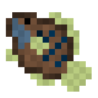
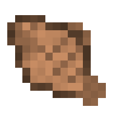
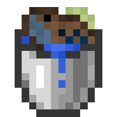

Bluegill
The bluegill is a common fresh water fish that can be used as a source of food or be kept as a pet by the
player. It is passive towards the player and can drop items such as bone meal or raw bluegill.
Spawning
Bluegill are common solitary fish that spawn exclusively in rivers. The way bluegill spawn naturally is by replacing some naturally spawning aquatic mob. In rivers, each salmon has a chance to be replaced with a bluegill. The table below shows the spawn rates of the bluegill in the biome it spawns in.
| Biome | Spawn Chance (Replacement Chance) | Group Size |
|---|---|---|
| River | 20% (Salmon) → 50% (Bluegill) | 1 |
Items
Item drop chances
Bluegill can drop 2 items, bone meal or raw catfish. Upon death, it is guaranteed to drop 1 raw bluegill, only if a player kills it. Similarly, it will only drop 1-2 bone meal (equal chance for both) if the player kills it. Below is a table that shows the item drop chances.
| Item | Chance (If killed by player) | Count |
|---|---|---|
| Raw Bluegill | 100% | 1 |
| Bone meal | 100% | 1 - 2 |
Raw Bluegill

Raw Bluegill is an item that is exclusively dropped by bluegill, stackable up to 64 in one item slot. It has a 100% chance to be dropped by the bluegill if the player kills it. Below are the food stats of the raw bluegill:
- Nutrition: 2
- Saturation: 0.4
Cooking
The Deep Blue Grill now allows more dynamic cooking for the various food items. With coal and charcoal, the player can cook 8 raw food items for each coal. With sticks, each food item can be cooked with two sticks.
Cooked Bluegill

Cooked Bluegill can be obtained when a player cooks Raw Bluegill in the Deep Blue Grill. It is used as new source of food for the player, stackable up to 64 in one item slot. Below are the food stats of the cooked bluegill:
- Nutrition: 5
- Saturation: 7
Behavior
Largemouth bass are passive mobs, meaning they do not attack the player. They are ambient fish that swim around midwater in rivers.
Obtaining Bluegill
Bucket of Bluegill

Because of their size they can actually be kept as pets and transported via water buckets. The player only needs to use a bucket of water near the bluegill to scoop it up, replacing their water bucket with a bucket of bluegill. Like with vanilla Minecraft mobs, right clicking the ground with the bucket of bluegill will place water and the bluegill, giving the player an empty bucket. When a bluegill is placed down via the bucket, it won't despawn, unlike wild, naturally spawning bluegill who will despawn when the player leaves the area.
I wonder what would happen if you surround a bucket of bluegill with teeth...
Maybe the orca might become jealous? Would the great white shark consent? Would the bull shark be angry about it? Or maybe the crocodile will snatch it out of your hands.
History
Development History
| Datapack Version | Addition/Change |
|---|---|
| 1.2.0 (Roaring Rivers Part 2: Shocking Snap) |
|